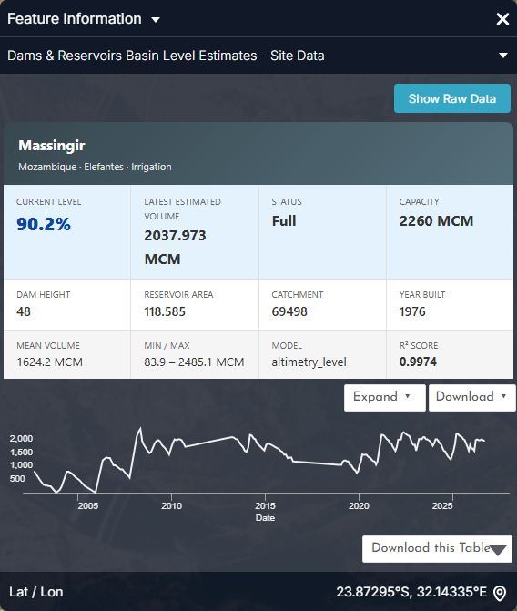
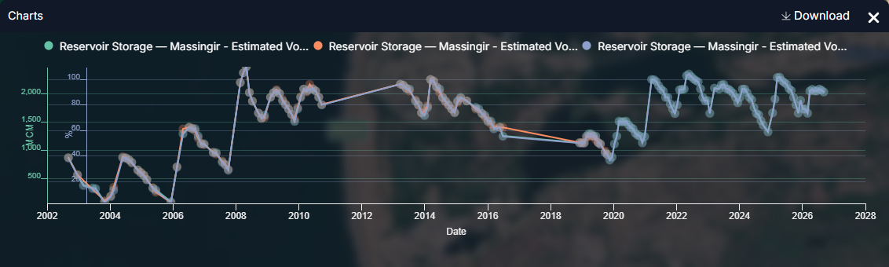
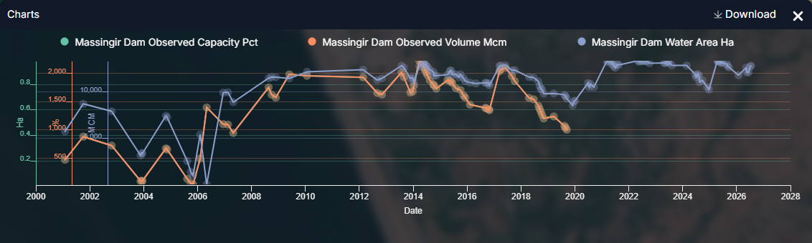
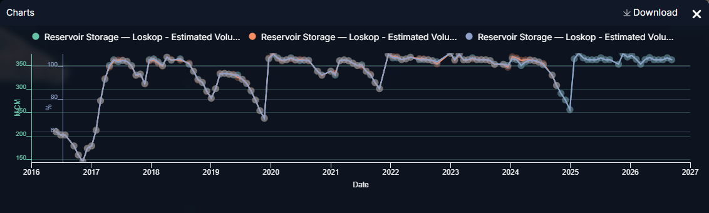
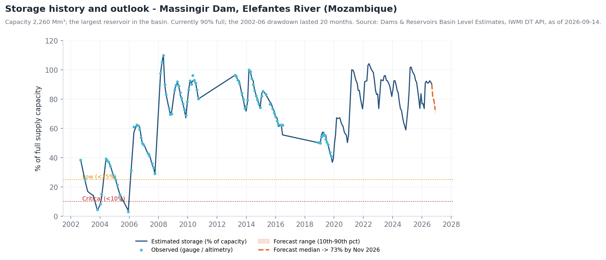
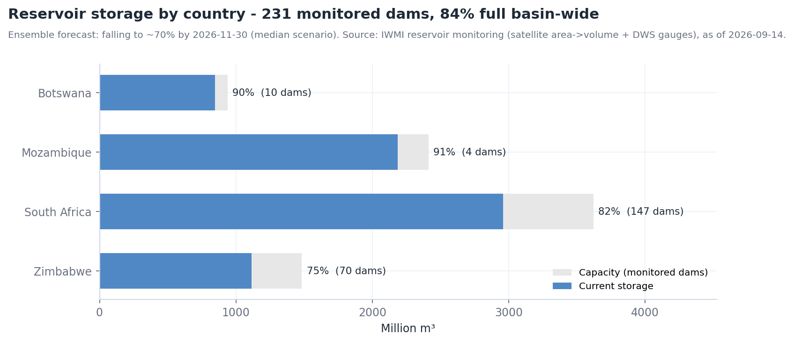
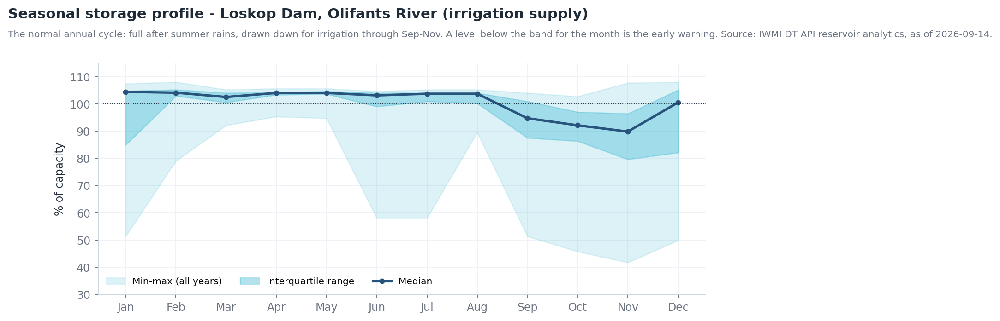

Monitorização de albufeiras¶
A pergunta¶
Um operador de barragem, uma entidade de abastecimento em alta ou a equipa da LIMCOM quer saber quão cheias estão as albufeiras da bacia, como cada uma evoluiu ao longo da estação e que afluências as próximas semanas trarão — incluindo para barragens sem telemetria, observando-as a partir do espaço.
| Quem | Decisão | Frequência |
|---|---|---|
| Operadores de barragens e autoridades nacionais (DWS, ZINWA, ARA-Sul, WUC) | Calendário de descargas, quotas de irrigação, preparação para descarga de superfície | Semanal |
| Entidades de abastecimento em alta e municípios | Níveis de restrição, fontes alternativas | Mensal; semanal abaixo de 30 % |
| Associações de regantes | Repartição sazonal (normalmente fixada em out.) | Sazonal |
| LIMCOM | Reporte de armazenamento à escala da bacia, coordenação seca / cheia | Mensal |
Em resumo — 14 de setembro de 2026
- 231 barragens com estimativas de armazenamento (445 na camada); 84 % cheias à escala da bacia (7 107 de 8 454 Mm³).
- Por país: Botsuana 90 % (10 barragens) · Moçambique 91 % (4) · África do Sul 82 % (147) · Zimbabué 75 % (70).
- Estado: 128 Full, 25 Adequate, 20 Low, 56 Critical / Empty — as críticas são sobretudo pequenas barragens agrícolas, mas Middle Letaba (180 Mm³) estava a 10,5 % em julho de 2026.
- Perspetiva: a previsão por conjunto aponta para uma queda de ~15 pontos, para ~70 %, até 30 de novembro de 2026, antes das chuvas.
- Massingir (2 260 Mm³, a maior) está a 90 %; Loskop a 104 %; De Hoop a 120 % (acima do nível de pleno armazenamento).
Como se encadeia o fluxo de trabalho¶
flowchart TD
A[Dams & Reservoirs<br/>Basin Level Estimates] --> B{Estado por barragem<br/>Full / Adequate / Low / Critical}
B --> C[Clicar na barragem:<br/>histórico + gráfico de previsão]
C --> D[Cruzar<br/>Reservoir Levels – Water Area Timeseries<br/>Rolling Monthly GeoMAD]
D --> E[Perspetiva de afluências<br/>Streamflow Gauging Stations<br/>GloFAS Discharge Forecast – SWAT Channels]
E --> F{Baixa e a descer?}
F -- sim --> G[Restrições · cortes de quota<br/>ver Secas]
F -- não --> H{Cheia e afluências a subir?}
H -- sim --> I[Descarga / pré-descarga<br/>ver Cheias]
H -- não --> J[Relatório de rotina<br/>Story + Share]Dados a utilizar¶
| Conjunto de dados | Onde no catálogo | O que indica |
|---|---|---|
| Dams and Reservoirs (LIMIS) · Dam locations | Water Resources → Reservoirs and Storage / Water Infrastructure | As barragens registadas: localização, nome, atributos |
| Dams & Reservoirs Basin Level Estimates | mesmo grupo (também em Flood Monitoring → Supporting Hydrological Data) | Armazenamento estimado (%, Mm³), classe de estado, método e confiança por barragem — clique para o gráfico e a previsão |
| Reservoir Levels – Water Area Timeseries | mesmo grupo | Área de água ao longo do tempo, derivada de satélite — um indicador do nível, funciona para qualquer barragem (104 albufeiras) |
| Reservoir Levels – DEA by Original ID · – Aggregated by Channel · – Yearly Aggregated by Channel | mesmo grupo | O mesmo sinal por massa de água, por canal fluvial (1 424 canais) e como resumo anual |
| Waterbodies from DEA (Raster WMS) · Water Observations – All-Time Frequency | Water Resources → Surface Waterbodies | Onde a água está normalmente presente e com que frequência — a pegada de referência |
| Rolling Monthly GeoMAD (Sentinel-2) | Satellite Images | Uma imagem mensal sem nuvens para inspecionar uma albufeira a olho |
| Streamflow Gauging Stations (LIMIS) · Verified Monitoring Stations (LIMIS) · SWAT and Observed Sites | Water Resources → Streamflow Monitoring | Estações de afluência a montante da barragem (183 estações em tempo real) |
| GloFAS Discharge Forecast – SWAT Channels | Flood Monitoring → Discharge Forecasting | Afluência prevista para o canal que alimenta a barragem |
| Hydropower Evaporation Footprint (Africa) · Hydropower Open Water Surface (Africa) | Water Use Monitoring → Sectoral Demand | Perdas por evaporação na superfície da albufeira |
Como o armazenamento é estimado¶
Cada barragem em Basin Level Estimates tem um method e um nível de
confiança; leia-os no painel de informação antes de citar um número.
| Confiança | Método | Erro típico |
|---|---|---|
| High (Nível 1) | Nível medido ou altimetria de satélite com curva área–capacidade específica (Massingir: R² 0,997, MAPE 1,8 %) | ± alguns % |
| Medium (Nível 2) | Geometria de cone truncado, ou fração da capacidade com altura da barragem conhecida | ± 10 % |
| Low (Nível 3) | Fração da capacidade / lei de potência empírica só a partir da área | ± 20 % ou mais |
| No data | Sem modelo de armazenamento (214 das 445 barragens) | — |
Percurso¶
- Explore data → pesquise
Reservoir→ adicioneDams & Reservoirs Basin Level Estimates, e depois Dams and Reservoirs (LIMIS) para os nomes. Use Ideal Zoom. A cor do símbolo é a classe de estado. - Clique numa barragem. O painel Feature Information dá a % atual, volume, capacidade, método, confiança e o gráfico de armazenamento com previsão (Figura 1). Use Show Raw Data ou o descarregamento CSV para a tabela.
- Adicione Reservoir Levels – Water Area Timeseries e clique na mesma albufeira: o gráfico mostra a área de água ao longo do tempo. Uma área a encolher na época seca e a recuperar após as chuvas é o ciclo normal (Figura 3); um declínio plurianual é a preocupação.
- Para uma visão de longo prazo, adicione Reservoir Levels – Yearly Aggregated by Channel e compare anos lado a lado.
- Veja-o. Adicione Rolling Monthly GeoMAD (Sentinel-2) e avance a linha temporal para duas datas com um ano de intervalo; use Compare (esquerda/direita) para ver a linha de costa mover-se. Adicione Water Observations – All-Time Frequency para ver a pegada de pleno armazenamento que a albufeira devia ocupar.
- Afluências. Adicione Streamflow Gauging Stations (LIMIS) e GloFAS Discharge Forecast – SWAT Channels; clique no canal a montante da barragem para o hidrograma previsto. Afluência prevista a subir para uma albufeira baixa é boa notícia; para uma cheia é risco de descarga de superfície (ver Cheias).
- Capture uma cena por albufeira como Story para a reunião de operações.
Interpretar os gráficos¶
As figuras abaixo são os gráficos do próprio portal, capturados no painel Feature Information (clique num elemento) e no painel Charts que abre com o botão Expand. Todos os gráficos de estações, barragens e locais seguem o mesmo padrão: um cartão-resumo, um gráfico de pré-visualização, Expand para ampliar, Download para o CSV. Os gráficos estão em inglês.


- Modelo e R² são a verificação de confiança: altimetry_level com R² 0,997 é Nível 1; uma barragem capacity_fraction sem R² é uma estimativa de Nível 3 (± 20 %).
- Mín. / máx. 83,9 – 2 485 Mm³ enquadra o histórico: a barragem já esteve praticamente vazia (2003, 2005) e acima do pleno armazenamento (2008).
- Expand ▾ oferece quatro séries — Estimated Volume, Observed Volume, % Capacity, Area; Download this Table dá o CSV.


- Onde a estimativa (azul) e as observações (laranja) coincidem o modelo está calibrado; os segmentos retos (2010–13, 2016–19) são lacunas sem observações — leia-os apenas como tendência.
- O dente de serra anual desde 2021 é o ciclo de operação: enche até 100–105 % em março, baixa até ~65–75 % em novembro para a irrigação de Chókwè.


- A série de área de água continua depois de terminar o registo da estação (2019) — é assim que o portal monitoriza barragens sem telemetria: área por satélite, convertida em volume pela curva calibrada.
- Área e volume movem-se juntos mas não proporcionalmente (uma albufeira plana perde área depressa a níveis baixos); essa não-linearidade é a curva área–capacidade que o modelo de Nível 1 codifica.


- Destacam-se três esvaziamentos: 2016 (até ~150 Mm³, 42 %), 2019 (~250 Mm³) e fim de 2024 (~250 Mm³) — cada um o fim de uma época seca antes do reenchimento de verão.
- O patamar plano a ~350–365 Mm³ é o pleno armazenamento; valores acima são períodos de descarga de superfície. É este o gráfico a ler contra a faixa sazonal na secção recolhida abaixo.
Contexto de longo prazo (gráficos derivados dos mesmos dados da API)
Estes não são ecrãs do portal: foram gerados a partir das mesmas séries com tools/use_case_charts.py para mostrar como as séries do portal se comportam ao longo de décadas.






Indicadores e o que fazer¶
| Indicador | Onde | Limiar | Ação típica |
|---|---|---|---|
| Classe de armazenamento | Símbolo de Basin Level Estimates | Low < 25 %, Critical < 10 % | Restrições (Low); abastecimento de emergência (Critical) |
| Armazenamento vs faixa sazonal | Clicar na barragem → gráfico | Abaixo da faixa interquartil do mês | Rever quotas; verificar estações de afluência |
| Mediana da previsão a 30 nov. | Previsão no gráfico | < 40 % | Cortar a repartição de irrigação da próxima estação |
| Mediana da previsão a 30 nov. | Previsão no gráfico | > 95 % com perspetiva húmida | Plano de pré-descarga; notificar jusante |
| Tendência da área de água | Gráfico de Water Area Timeseries | A descer > 3 anos consecutivos no mesmo mês | Investigar assoreamento / sobre-repartição |
| Previsão de afluência | GloFAS – SWAT Channels a montante | A subir acima de p95 para uma barragem cheia | Aviso de descarga de superfície (ver Cheias) |
Exemplo prático — uma revisão de operações em setembro¶
- Adicione Dams & Reservoirs Basin Level Estimates. A olho: a maioria das grandes barragens está Full; Middle Letaba está a vermelho.
- Clique em Middle Letaba (Vhembe): 10,5 % em 5 de julho de 2026, 18,9 de 180 Mm³, método ml_isotonic, confiança Medium. O gráfico mostra um declínio plurianual. Clique em Reservoir Levels – Water Area Timeseries na mesma barragem — a área de satélite confirma a redução, independentemente do modelo.
- Adicione Streamflow Gauging Stations (LIMIS) e GloFAS Discharge Forecast – SWAT Channels; o canal de afluência de Middle Letaba prevê caudal negligenciável a 30 dias. Sem alívio antes das chuvas: a repartição do perímetro de Middle Letaba tem de ser cortada (ver Uso de água na irrigação).
- Clique em Massingir: 90 %, previsão de 73 % em novembro. As descargas para irrigação em Chókwè podem continuar como planeado — mas note que os pontos Extreme no Elefantes abaixo da barragem são essas descargas (ver Cheias).
- Clique em De Hoop: 120 % — acima do pleno armazenamento, pelo que qualquer tempestade precoce no Steelpoort passa diretamente. Assinalar para a vigilância de cheias.
- Capture as três barragens como Story; Share / Print a ligação com a ata da reunião.
Lista de verificação do relatório de operações¶
- % de armazenamento da bacia, país e sub-bacia com a data de referência
- Barragens Low / Critical, com método e confiança
- Barragens acima do pleno armazenamento, com previsão de afluência
- Posição de cada barragem-chave em relação à sua faixa sazonal
- Armazenamento previsto a 30 de novembro (mediana e cenário seco)
- Ações recomendadas de quota, restrição ou pré-descarga
- Ligação da Story
Limites a ter em conta¶
- As séries de área de água por satélite são óticas: falhas por nuvens na época das chuvas e braços estreitos e arborizados reduzem a precisão.
- A área não capta a profundidade; uma albufeira pouco profunda pode parecer cheia com pouco volume — é por isso que as barragens de confiança Low têm ± 20 % de erro.
- As estimativas de nível e as previsões são modeladas onde não há telemetria — não substituem nada onde existe uma estação. Leituras acima de 100 % são reais (água acima do nível de pleno armazenamento) mas de curta duração.
- A data da estimativa varia por barragem (algumas têm semanas); cite sempre
current_dateda informação do elemento. - Os gráficos de armazenamento e previsão exigem sessão iniciada.
Relacionado¶
Cheias · Secas · Caudais ecológicos · Contabilidade da água · Ferramentas do Mapa — Comparar